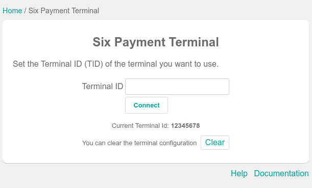
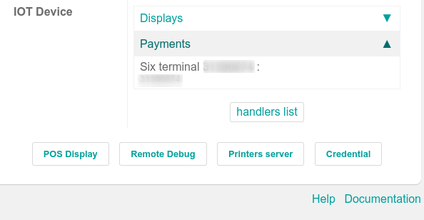
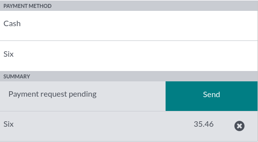

SIX¶
Connecting a SIX payment terminal allows you to offer a fluid payment flow to your customers and ease the work of your cashiers.
Warning
Even though Worldline has acquired SIX Payment Services and both companies use Yomani payment terminals, the firmware they run is different. Terminals received from Worldline are, therefore, not compatible with this integration.
Configuration¶
Install the POS IoT Six module¶
To activate the POS IoT Six module, go to Apps, remove the Apps filter, and search for POS IoT Six. This module adds the necessary driver and interface to your database to detect Six terminals.
Note
This module replaces the POS Six module.
Connect an IoT box¶
Connecting a Six payment terminal to Odoo is requires using a Raspberry Pi or virtual (for Windows OS only) IoT box.
Configure the terminal ID¶
Navigate to your IoT Box homepage, where you can find the Six payment terminal field once your database server is connected to the IoT box. Click Configure, fill in the Terminal ID field with the ID received from Six, and click Connect. Your Six terminal ID should appear in the Current Terminal Id section.
Odoo automatically restarts the IoT box when the Six terminal ID is configured. If your Six terminal is online, it will be automatically detected and connected to the database. Check the IoT box homepage under the Payments section to confirm the connection.
Configure the payment method¶
Enable the payment terminal in the application settings and create the related payment method. Set the journal type as Bank and select SIX IOT in the Use a Payment Terminal field. Then, select your terminal device in the Payment Terminal Device field.

Once the payment method is created, you can select it in your POS settings. To do so, go to the POS’ settings, click Edit, and add the payment method under the Payments section.
Pay with a payment terminal¶
When processing a payment, select your Six payment method in the Payment Method section and click Send. To cancel the payment request, click Cancel. Once the payment is successful, the status switches to Payment Successful.
Note
Once your payment is processed, the type of card used and the transaction ID appear on the payment record.
The language used for error messages is the same as the Six terminal. Configure the terminal to change the language or contact Six.
By default, the port used by the Six terminal is
7784.
Tip
If there are connection issues between the payment terminal and Odoo, you can still force the payment validation in Odoo using the Force Done button.